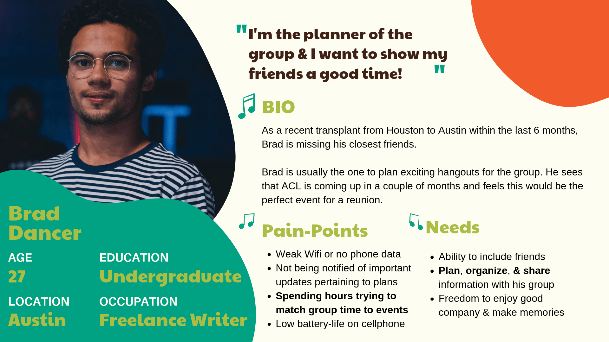

Overview
The Problem
The current version of the ACL application has very limited functionality. While you can view the scheduled events and purchase tickets, both tasks are clunky and unintuitive. Not only are the current features inadequate for the average user’s experience, but key features are missing. Because of this, many festival attendees rely on the website for the event, and with limited data and network coverage this can leave many users lost and scattered.
The Solution
My team and I decided to redesign the ACL app to have increased clarity, aesthetics and useful features to allow users to better plan their festival. With the new app, users will be able to efficiently navigate the event, allowing them to focus on having a good time with their friends.
My Role
While my team worked very collaboratively on the project, I took lead on our Interaction Design, Visual Design, and User Interviews. I put together our prototype, guiding what frames we needed and designed some of our main functionality: adding / tracking friends, the schedule pages, and the map pages. Our design system was an important factor of the project that I put a lot of time into in order to make our workflow and layouts consistent. I also put together an interview guide and helped to determine our direction based on the interview results.
The Process

Research
How well does the current app function?

Key Insights
- Embedded website for buying tickets.
- No search or obvious navigation.
- Relies on chatbox for some navigation.
- Scheduling format hard to navigate.
- Limited filtering options.
- Poor overall aesthetic.
- Visual design not consistent with ACL brand.
- No obvious way to reach login process.
- Little flexibility and customization.
We started off the project by looking into the current application and performing a heuristic analysis, using the guidelines outlined by Jakob Nielsen. We each individually analyzed the application and then took an average of our scores. Overall the application scored from average to subpar and was weakest in flexibility and efficiency. The application was very simple, but also lacking many features that would make it worth using. It also had strange functionality, including an embedded website for purchasing tickets, and used a poorly developed chatbot as its main resource for extra information. The app also didn’t follow the branding of the festival itself. Most of the pages were laid out with a black and white color palette, while the splash page used the standard ACL colors.
Browsing the Competition

After analyzing the current ACL app, we looked at some of the other festival applications out there and completed a competitive analysis chart. While we found several different apps, we took a closer look at 2 specifically, Lollapalooza and Coachella.
We noticed a lot of similarities between the Lollapalooza app and ours. After further research we discovered this was because they are both owned by the same parent company. This app had usability flaws as well but seemed to be a better version overall.
When it came down to quality, the Coachella app really stood out to us and I took a deep look at their screens and task flow. While it’s not a perfect design, it did several things well. It had a nice aesthetic overall, clear navigation, a map feature, and a decent schedule layout. I used this app for reference when designing some of my frames, while working in my own improvements.


Exploring the Festival Experience

User Interviews
I was the lead on user interviews, so I prepared an interview guide for my team to use. We interviewed 7 people with festival experience. We also conducted some short usability tests with the current version of the app. Afterwards, we affinity mapped our user research and competitive analysis to identify our key focus points for the project.
Festival High Point: Making memories with friends.
Festival Low Point: Being seperated and unable to contact friends.
Most Requested Feature: Interactive Festival Map

Festival Pain Points
- Hard to make it to events on time.
- Loss of data and cell phone connectivity.
- Hard to regroup if everyone separates.
- No landmarks to meet up with friend group.
- Hard to find water or shade.
Application Pain Points
- Not much to do in the app.
- Embedded website was confusing.
- App doesn’t look very good.
- Hard to switch between days in the schedule.
Additional Notes
- Most people said they usually buy tickets through the website, and never through the app.
- Some users would look through the app and add the event details into a scheduling app, such as Google Calenders.
Define
Who is our user?
We felt like we already had a good understanding of our target user before we began doing research. It turns out that our beliefs about our standard user aligned closely with our research findings in the end. After synthesizing data that we gathered from our analysis and interviews, we were able to solidify a user persona for the average application user based around the pain points and needs of our interview participants.
Brad's Festival Journey
With our user persona fleshed out, we were also able to finalize both a user journey that followed Brad's experience using the current application, as well as with our version. Again, we already had a general idea of how the average person might experience both the festival and the app. Reviewing our research findings confirmed that we were on the right track and gave us confidence in our key focuses for the design.


What are our goals?
Currently, while there are around 450,000 attendees at ACL each year, the app only has around 50,000 downloads in the Google Play store, with a rating of 1.5 stars. Meanwhile on the Apple store it has a rating of 2.0 based on only 10 reviews. From this and our analysis, we decided the business needs of ACL were increased app usage and consistent branding. Increasing the app usage would come from solving the needs of the users, while consistent branding meant re-designing most of the application.
With our user fleshed out and his journey visualized, we were able to clearly see our direction for the project. We recognized that users need an efficient way to schedule their plans and stay connected with friends at the festival, even without data connectivity. With this concept in mind, we white-boarded and discussed some task flows and user flows as a team. This helped us to stay on the same page. We were then able to prioritize which features we should design within the scope we were given.


Difficulties came up in this phase, since we had a lot of room for growth in the application. There were different opinions about what features were necessary and possible within the timeframe that we were working in. However, we were able to explain our concepts and kept an open mind to each other's perspectives. Because of our team's effective communication, we were able to compromise on our scope. With this solidified we split up the workload in terms of who would make the rough sketches of each feature.
Key Focuses
Global
- Aesthetic appeal and branding
- Remove unnecessary functions
- Clear navigation
Account Page
- Account page to view favorites, your festival group, and ticket info
- Ability to add friends to your festival group to build a group schedule
- Ability to sync your personal or group schedule with Google Calenders
Schedule Page
- Visiblility of which friends are going to what events
- Useful filtering options
- Better schedule layout, constrained to horizonal scrolling only
Map Page
- Interactive map and static map
- Useful filtering options
- Ability to place custom markers to schedule meetup points
Develop
Initial Sketches
I was the lead on our schedule, map, and filter screens, so I made some sketches to see what these might look like, while my team did the same for their respective features. We then came together for a design storm. After reviewing each other’s initial screen sketches, each member of the team individually sketched out how they thought each task might flow through the screens. After reviewing once more, we had a solidified understanding of our layout goals and were able to move onto wireframing.
Below are some of my rough sketches from the process.
.png)
.png)
.png)
.png)
.png)
.png)
.png)
.png)
.png)
.png)
Design System
Before going into the wireframes, I wanted to make sure that our app would have a consistent layout. Because I had the most experience with Figma coming into the project (and I have a lot of fun doing it), I took lead on our Design System. Specifically, I worked a lot on creating our pattern library and assisted my teammates in designing their own re-usable components.
Our style guide was also decided early in our process, as one of our focuses was to center the design around the ACL brand. I helped guide my team in deciding colors, font-sizing, and iconography, while we worked collaboratively to decide where to use each resource. More information on our visual design can be found below.
We spent almost as much time in this section as we did creating the actual wireframes, but the re-usability and consistency that the system provided saved us a lot of time in making iterations and adjustments later in the projects lifecycle.

Wireframes
When going into the wireframes, I wanted to focus on making the process of finding your events, planning your festival, and putting together a group as efficient as possible. As lead for our interaction design, I also collaborated with my teammates on their screens to help create a cohesive flow through the application. Once we had a majority of our frames designed, I was able to create a prototype!
Here are some of the initial wireframes from this process.


Test
Usability Testing
We were able to test 5 users who had experience going to ACL or other festivals. Our goal was to get them to run through most of the main features of the application. Here’s our scenario and task list.
Scenario: You are planning to go to ACL Weekend 2 this year with a group of friends from out of town. You want to create an itinerary to make sure you can all see your favorite artists and regroup before the headliner events.
Summary: Overall most of our users had only minor issues getting through the tests. However we did have confusion with some of the applications Overall most of our users had only minor issues getting through the tests. However we did have confusion with some of the applications verbiage and icons.
Task List:
- Use the schedule to find the artists you want to see and add them to your favorites.
- Filter the schedule to view only your favorites.
- Sign in to your account and add friends to your festival group.
- Use the map to find your main stage, and add a drop pin to schedule a meetup.
Key Takeaways:
- Confusion on schedule page buttons / Switching between list and schedule views / Changing weekends.
- Unclear what locate button does on the artist bio page.
- Sidebar organization not always clear.
- Hamburger icon should stand out more / Icon sizing could be better.
Perfecting the Details
In line with the findings from our testing, my team and I iterated and changed the icons and verbiage on the schedule page as well as on our artist bio page and side bar menu. Here’s a view of my iterations based on our test results and stakeholder feedback.

Deliver
The Real MVP
Check out our final mockups and visit the current iteration of the prototype!


Throwing on the Paint
As one of our visual design leads, I guided our decisions on the branding of the app, colors, typography and iconography.
Branding
When trying to match the branding of ACL, we looked a lot at the website to see how they used their colors and typefaces. We really wanted to match the fun and carefree vibes of the festival, as opposed to the black and white color scheme that the app currently uses.
Colors
We ended up using the lighter green in our app bars as it was the primary color on the website, while we used the turquoise green in several menus, similar to the website. The orange color was great to use in CTA buttons. The off-white was useful for some page backgrounds as a slight visual change from standard white. Most of our text was either black or white, to keep things simple.
Fonts
For our design, we used fonts that weren’t the exact same, due to not owning a license for them. However, the ones we used were similar enough that the difference is hardly noticeable.
Icons
For our icons we kept things consistent and used the Google Material theme icons to keep things simple and recognizable.
Next Steps
There’s still a lot of room for growth outside of our MVP. I would want to add an onboarding process to explain how friends are shared. We also discussed adding functionality to track the balance loaded onto your festival wristband, as well as mobile wristband activation. Another feature worth exploring for the business needs of ACL is a merchandise shop. Lastly, we would also consider adding a food ordering service for third-party vendors at the festival.
Conclusion
Overview
My team and I felt very satisfied with our final product. We put a lot of work into making the frames shine and successfully addressed the goals that we were targeting. I believe that with this new application design, users would find the functionality they need to plan and navigate Austin City Limits well enough to focus on the experience itself. With more happy festival attendees, ACL itself will profit and everyone gets a piece of the pie.
Challenges
I mentioned this earlier, but we had a lot of different ideas for the project, and it was tough to narrow down our focus at points. I started to fall into feature creeping at certain points, but my team did a good job balancing that out and keeping us focused. We also had general challenges in the software we used. My team was brand new to Figma, and I was still learning about design systems. Fortunately, we all were able to overcome our limited knowledge by helping each other and putting in work. Also, we were about halfway through our wireframes when we realized that we forgot to account for the Iphone X notch at the top of the device. We had to go back and edit a lot of our frames by adding in the status bar since we didn’t know Figma wasn’t tracking this itself.
What I Learned
The project was a valuable learning experience in terms of working with a team. I like to work on all aspects of my projects and tend to be a perfectionist, but I learned to let go and compromised in a lot of areas where my team wanted to go in a different direction. I think we all learned a lot more about Figma as well. Working collaboratively in the same workspace, at the same time was an interesting experience and was a great way to interact on the designs. Lastly, I learned that there are a lot of useful research points to make use of, such as application statistics and general business information. This type of research can be very useful in presenting designs and explaining my thought processes.